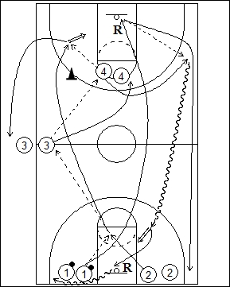

Catégorie : ECHAUFFEMENT (Ech-017)Déroulement
- Quatre files de joueurs. Deux à une baseline, avec les ballons dans une file. Une autre file à une extrémité de la ligne médiane et une dernière file à la ligne des lancers-francs opposée.
- Le premier joueur de la file 1 passe au premier joueur de la file 2 et court pour effectuer le premier rebond au panneau opposé. Le premier joueur de la file 2 passe au premier joueur de la file 3 et va effectuer le premier shoot en passant derrière le cône. Le premier joueur de la file 3 passe au premier de la file 4 qui transmet à 2 pour le shoot. Après cette passe, le premier joueur de la file 4 demande le ballon de 1, dribble vers le panneau de départ, shoote et prend son rebond.
- 1 va en 2, 2 en 3, 3 en 4 et 4 en 1 avec le ballon.
Coaching points
- Dès que le premier shoot est tenté, la deuxième vague démarre.
- Insister sur la précision des passes et sur un rythme crescendo.